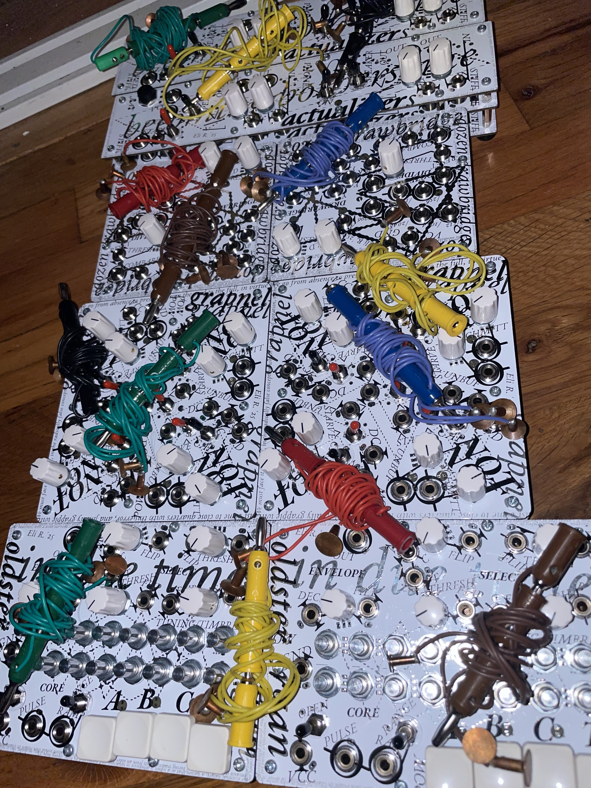

Figure 1. Beta circuits
Demo video
One day, on a trip to Maumee Bay, I was watching the tide cyclically accumulate and collapse in on itself. Reminded of the action of the relaxation oscillator , a class of circuit that repetitively charges up to some threshold before discharging, I was struck by the distance between the organic interaction before my eyes – a dispersed intermingling of countless forces – and the neatly segmented way in which we traditionally think about circuits. Traditionally, patching in modular synthesizers is made of default one-to-one connections between inputs and outputs. Could it be possible to make a synthesizer which communicates in the distributed manner of natural systems? After entertaining various solutions in the following weeks, it occurred to me to return to the initial object of inspiration: water.
An electrical balance must be struck. Tap water is far too conductive to be of interest, and deionized far too insulating. By reintroducing a small amount of mineral into deionized water, we can create a solution of middling conductivity. Then, electronic nodes submerged in the pool influence each other in varying amounts depending on their distance. We have in effect a dense weighted network which expands in number of connections quadratically with the number of probes submerged.
This method of patching is ripe with distinctive musical effects. Listening in stereo presents an arresting spatial image. Tilting the plate of water shifts the weights of the entire network, causing unpredictable and multifaceted modulations. The dense feedback networks one ends up with – which we might think of as a strange type of pre-machine-learning neural network – are prone to producing compelling chaotic behavior. Conduction occurs via electrolysis reactions, so chemical gradients create variation in patch behavior over long periods of time, even if the instrument remains undisturbed. By attaching transducers to the pool, we can access a bizarre form of electromechanical feedback in which the output of a network modulates the structure of the network itself. In short, everything influences everything else in an insistently physical manner.
I currently have an ensemble of 5 beta modules, described below, as well as several earlier prototypes, which can be found at the page Amphibian Modules (Alpha). The beta modules are each set up with separate power rails for LEDs and other high current draw elements, which opens up the possibility for a variety of interesting behaviors when using the built in current starving capabilities. They also feature a 3 identical PCB construction, where the front panel, circuit board, and backplate all use the same board design, simplifying construction.
The Amphibian Modules was selected as a finalist for, and recieved an honorable mention at, the 2026 Guthman Musical Instrument Competition.
Beta Module List:
~G-50: a multi-function device including chaotic jerk systems , a current starved cluster of oscillators, and dual slew limiters
~Actualizers: a mixer and power supply board featuring switchable voltage controlled current starve, 4 volume controls, quarter inch inputs and outputs, two transducer amplifiers, and a headphone amplifier.
~Grapnel: A set of 4 independently voltage controlled current starveable inverters and schmitt inverters with switchable input capacitors, input diodes, and strength rheostats. Can be configured as independent oscillators, a ring oscillator, filters/amplifiers/distortions, and various other unclassifiable functions.
~Oldster Organ: Melodic synth voice based on the Ciat-Lonbarde Gerassic Organ with added timbre button, comparator XNOR external triggers for each of the 4 note select and timbre buttons, voltage controlled envelope section, deactivate open note switch, and separate outs for saw and pulse waves.
~Dozen Drawbridge: Analog switch and clock divider module. When used concurrently with the Oldster Organ is patchable as a cybernetic melody generator along the lines of the Melody Oracle by A Magic Pulsewave.